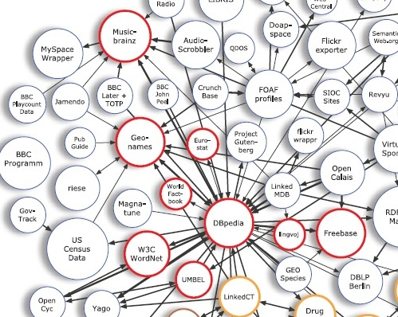
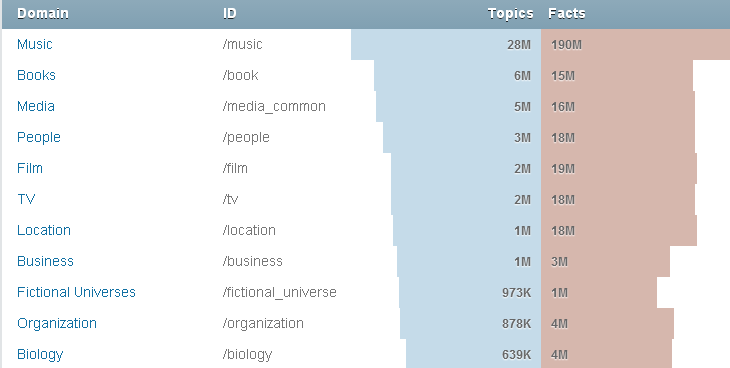
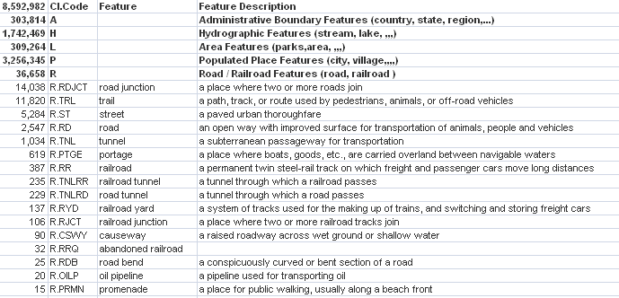
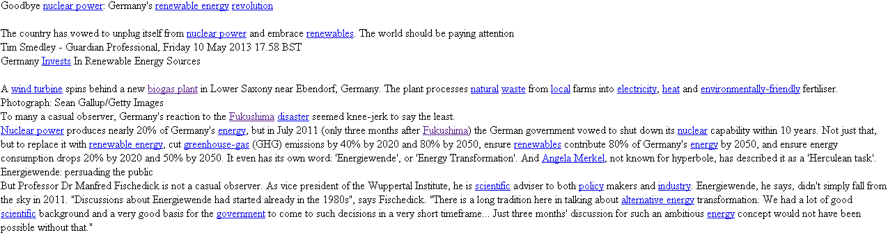
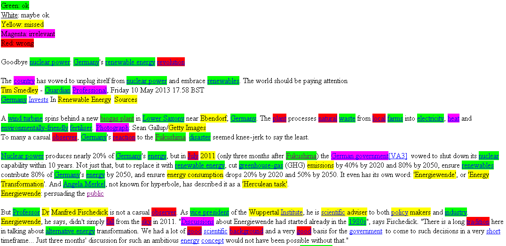
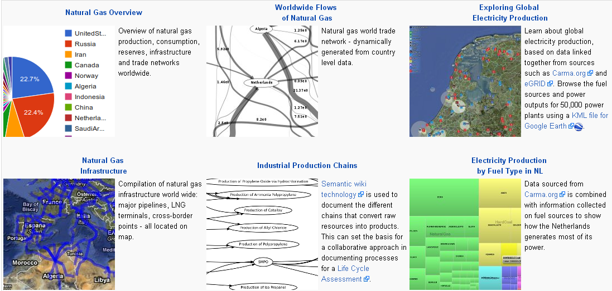
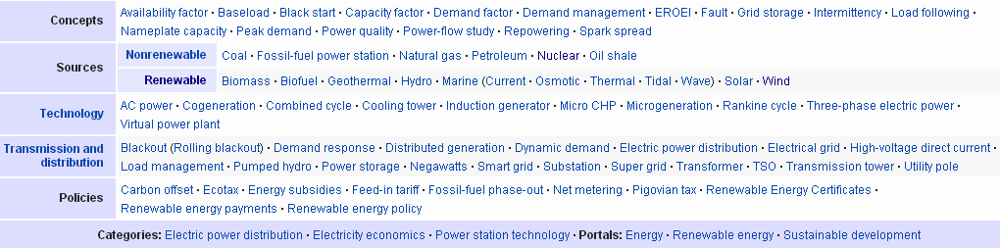

Multisensor Linked Data and Ontologies
Navigating This Presentation
- Ext links shown icon, eg http://www.ontotext.com
- This web-based presentation is made with S5 and plain text
- Press F11 for full-screen now (on small screen or Opera)
- Navigating:
- Click, Right, Down, PageDown: next slide (Opera: only PageDown)
- Left, Up, PageUp: prev slide (Opera: only PageUp)
- Home: first slide
- End: last slide
- nn Enter: go to slide nn
- t: toggle between slide view and single-page HTML view (for printing)
- c (or hover at bottom-right corner): show control panel
- toggle, prev, next icons
- table of contents listbox
Outline
2014-05-19 Mon
- General linked data
- FactForge and the datasets that it integrates
- Possible changes/additions
- Use-case specific linked data
- Energy Simulation; comparison to 2 automatic extractions
- Energy Thesauri
- Energy Datasets
- Use-case specific DBpedia subsets
- Household appliances
- Linguistic Linked Data in FactForge
- WordNet, Lingvo, Lexvo
2014-05-21 Wed
- Linguistic ontologies
- NIF
- OLIA and its constituents
- LEMON, GOLD, ISOcat??
- New Linguistic Linked Data
- WordNet RDF
- Wiktionary
- BabelNet
- UBYlemon
- News ontology
General linked data
FactForge
- DBpedia
- GeoNames
- FreeBase
- New York Times
- CIA World FactBook
- MusicBrainz (irrelevant)
- WordNet, Lingvoj, Lexvo
Possible changes/additions
- Update datasets
- BaseKB instead of FreeBase
- OpenStreetMap
FactForge
- An RDF warehouse of the 9 most central LOD datasets (red below)
 - A reason-able view over the web of data, which allows efficient linking and reasoning.
- Exposed to Multisensor as http://render.ontotext.com/ (allows writing).
- Dataset statistics
PROTON
Problem: each of the LOD datasets comes with its own ontology.
- Freebase isn't even structured according to RDF/RDFS principles.
Our approach:
- PROTON (PROTo ONtology): a lightweight upper-level ontology
- Serves as a reference mapping layer so you can access the integrated LOD datasets in a uniform manner
- Examples at http://factforge.net/sparql (contrasts access throuh PROTON vs DBpedia and GeoNames ontologies)
- RENDER Repository page in the wiki, including presentation from Sofia meeting
References:
- Mapping the central LOD ontologies to PROTON upper-level ontology, Ontology Mapping Workshop at ISWC 2010, Shanghai, China, November 2010
- Reason-able View of Linked Data for Cultural Heritage, Proceedings of S3T'2011, Burgas, Bulgaria, September 2011
- Creation and Integration of Reference Ontologies for Efficient LOD Management. In: Semi-Automatic Ontology Development: Processes and Resources, February 2012
- OWLIM Reasoning over FactForge. Proceedings of OWL Reasoner Evaluation Workshop (ORE'2012), collocated with IJCAR 2012, Manchester, UK
DBpedia

DBpedia is the central LOD dataset, serving as a source of stable URLs and a "crystallization point" for other LD.
- English version: 4M things, 3.22M classified in a consistent ontology:
- 832k persons
- 209k organizations (49k companies, 45k educational institutions)
- 639k places (427k populated places)
- 372k creative works (116k music albums, 78k films, 18.5k video games)
- 226k species, 5.6k diseases
- Localized versions (119 languages): 24.9M things
- 16.8M overlap (interlinked) with English Dbpedia, 8.1M (32%) are new
- 12.6M unique things with labels and abstracts
- 24.6M links to images
- 27.6M links to external web pages, 45M links into other RDF datasets
- 67M links to Wikipedia categories, 41.2M to YAGO categories
- 2.46B triples
- 470M from English Wikipedia
- 1.98B from other language editions
- 45M from links to external datasets
- Detailed statistics
DBpedia English-German example
http://dbpedia.org/resource/Wuppertal_Institute_for_Climate,_Environment_and_Energy
| prop | object | comment |
|---|---|---|
| dbpprop:leitung | dbpedia:Brigitte_Mutert-Breidbach | resource (has own data) |
| President | say what? | |
| Vice President | say what? | |
| Business Manager | say what? | |
| Prof. Dr. Manfred Fischedick | string (no own data) | |
| Prof. Dr. Uwe Schneidewind | string (no own data) | |
| owl:sameAs | http://de.dbpedia.org/resource/Wuppertal_Institut_fР“С˜r_Klima,_Umwelt,_Energie | identity link to DE resource |
- Semantics: "smush" the two resources, so they obtain the same statements
- OWLIM sameAs optimization
http://de.dbpedia.org/resource/Wuppertal_Institut_fР“С˜r_Klima,_Umwelt,_Energie
- (click "Back to old DBpedia" to see all data, this "NEW DBpedia" is no good)
| prop | object | comment |
| dbpedia-owl:individualisedGnd | 2133644-1 | Nice, link to DNB GND |
| dbpedia-owl:leader | dbpedia-de:Uwe_Schneidewind | Ok, all 3 are resources |
| dbpedia-de:Manfred_Fischedick | ||
| dbpedia-de:Brigitte_Mutert-Breidbach | ||
| prop-de:leitung | * Uwe Schneidewind * Manfred Fischedick * Brigitte Mutert-Breidbach | All 3 in one string?? |
| owl:sameAs | dbpedia-de:Wuppertal Institut fР“С˜r Klima, Umwelt, Energie | same as itself? Very useful ;-) |
FreeBase
- 43.7M "topics": like WikiPedia pages or DBpedia resources, typically lists of things (albums of a band, battles of a war, ingredients of a recipe…). 2.5B facts (triples)
- 3.5x bigger coverage than English DBpedia, 2.3x bigger than all DBpedias
- Human-curated fact creation, so supposedly higher quality than DBpedia:
(WikiPedia is curated, DBpedia mappings are curated, but DBpedia is automatically extracted) - Doesn't use RDFS modeling (e.g. no rdf:type). We've done significant work in mapping to RDFS and PROTON

GeoNames
- 8M place names (compare to 0.64M English DBpedia, estimated 1M all DBpedias, 1M FreeBase)
- Includes place names and alternate names in many languages
- Includes administrative hierarchy
- Includes coordinates (points only)
- I expect that most are interlinked to DBpedia
- Covers all countries, and a rich range of features

New York Times, CIA World FactBook
- 5k people, 3k organizations, 2k locations, 0.5k concepts
- Other factual data
- Strong US bias
- (?) Explore deeper for useful News patterns/ontologies?
- General geopolitical data: history, people, government, economy, geography, communications, transportation, military, and transnational
- Covers most countries: 267 world entities
- Don't know whether the LD is kept up to date
Much smaller but still important resources
Possible Changes/Additions to FactForge
Although FactForge integrates the above described datasets, it has some disadvantages
- Most importantly, it has not been updated in the last couple of years
- Eg DBpedia Live mirrors the minutely changes of Wikipedia.
But this is hard to implement, since we make corrections and mappings on top of DBpedia - Potentially it can be extended with new datasets, if needed by the project:
OpenStreetMap/LinkedGeoData, WikiData, and Linguistic LD
BaseKB Lime instead of FreeBase
- Removes some 13M erroneous and 100M redundant triples
- Resilient towards errors in NTriples format: skips the line instead of rejecting the whole file ("parallelSuperEyeball" module)
- Infovore Framework: allows to transform a more recent Freebase RDF dump (Last one is from 201303)
OpenStreetMap and LinkedGeoData
 OpenStreetMap
OpenStreetMap
- An open manually curated map of the world
- Thousands of types of features, ways and areas; from the monumental to the micro scale:
continents, oceans, mountains,
cities, monuments, power stations,
roads, power lines, rivers, parks, areas,
pharmacies, stores, phone boxes, recycling bins… - Integration of GPS tracks and easy editors for adding annotations
- Conversion of OSM to RDF: 15B triples
- Links to DBpedia, GeoNames, UN FAO Geopolitical data
- Last updated: just now (13 May 2014)
WikiData

- Provides atomic facts taht can be referenced in various WikiMedia sites
- Thus it is quite amenable to RDF use
- However, the data is still in its inception
- Furthermore, the facts can presumably be used from the WikiMedia sites, eg DBpedia
Use-case specific linked data
For the specific use cases, we'll need to assemble specific datasets
- The depth, breadth, content interlinking etc will be dictated by the needs of the use cases
We can elaborate, assemble and complement this only together!
- Both to be goal-driven (what data do you need)
- And to find the data (what data you have stumbled upon)
- Ontotext will assess the data found and look at interlinking (also related to T4.3 alignment)
- Maybe some "crowd-sourcing" will be needed (eg DBpedia subsets)
Energy Simulation
Identified all named entities and concepts in an Energy article by hand
- Compared with REEGLE Tagging API (automatic annotation from a thesaurus dedicated to energy) and DBpedia Spotlight
- Shows the manual annotation is much richer & precise. Would require very powerful tools. Probably overly ambitious: this is a "programme maximum"
- Once we decide what is a feasible set of features to extract, we could write up Annotation Guidelines that can be used by manual annotators to build a Gold Standard corpus to be used for Machine Learning. What do you think (?)
Article: "TheGuardian_Goodbye nuclear power.docx"
- Goodbye nuclear power: Germany's renewable energy revolution
- Tim Smedley - Guardian Professional, Friday 10 May 2013 17.58 BST

Simulation: Article Metadata/Attribution/Credits
"Standard" metadata, which doesn't mean it will be easy to extract.
- DCTerms provides properties for a lot of these
- Added MARC Relators, esp. where there's no DCTerms field
| field | value | URL/canonic value |
| creator | Tim Smedley | |
| creator.affiliation | Guardian Professional | |
| creator.role | Author | http://id.loc.gov/vocabulary/relators/aut |
| created | Friday 10 May 2013 17.58 BST | "20130510T17:58:00"^^xsd:dateTime |
| contributor | Sean Gallup | |
| contributor.affiliation | Getty Images | |
| contributor.role | Photograph by | http://id.loc.gov/vocabulary/relators/pht |
| contributor | Accenture | |
| contributor.role | paid for by | |
| publisher | Guardian Sustainable Business | |
| editorial | The Guardian | |
| editorial.role | controlled and overseen by (responsible party) | http://id.loc.gov/vocabulary/relators/rpy |
| rights-holder | Guardian News and Media Limited | |
| rights-holder.role | copyright holder | http://id.loc.gov/vocabulary/relators/cph |
| copyright date | 2014 | "2014"^^xsd:gYear |
Energy Simulation: Concepts (1)
- altLabels separated with ";". See "DBpedia Subsets re Energy" later on.
Generation, Transfer
- nuclear power; nuclear capability (altLabel but only in the Energy context, else means nuclear weapons)
- renewable energy; renewables; Renewable Energy Sources; renewable-energy capacity
- wind power
- wind turbine
- wind farms; wind plants
- offshore wind farms; offshore wind plants
- intermittent wind energy
- biogas plant; plant [that] processes natural waste; biomass plants
- biomass facilities
- power lines, power cables
- electricity grid
- transportation [of energy]
- storage [of energy]
- micro-generation
- PV; photovoltaic
- photovoltaic plants
- co-generation; cogeneration
Energy Simulation: Concepts (2)
Economics
- renewable energy surcharge
- energy bill
- micro-ownership
- prosumer model; 'prosumer' model; prosumer (eg "the prosumer aspect")
- incentive systems
- ecological taxes
Other energy concepts
- electricity
- heat
- environmentally-friendly
- insulation of buildings
- fertiliser
- greenhouse-gas (GHG) emissions
- energy consumption; consumption of energy
- consumer behaviour
- Energiewende, Energy Transformation, alternative energy transformation
- utility companies
- battery
Other
- local farms
- houses
- Herculean task; Herculean
Energy Simulation: Events, Places, Orgs, Persons
Events (from thesaurus)
- Fukushima disaster
- Fukushima: in this case is event not place: can be recognized by: "July 2011 (only three months after …)"
Places
- Germany; Germany's; economic powerhouse of Europe (alias)
- Lower Saxony
- Ebendorf, Germany
Organizations
- German government
- Wuppertal Institute; Wuppertal Institute for Climate, Environment and Energy
- Big Four energy companies
- RWE
Persons
- Angela Merkel
- Professor Dr Manfred Fischedick
- Fischedick: requires coreference resolution
Roles/positions
- Professor Dr
- vice president
- scientific adviser
Energy Simulation: Quantified Events
Quantities & Dates from text. Would be hard to recognize, but if possible will enable some quite interesting quantitative analyses.
| subject | action | quantity | object | date |
| Nuclear power | produces | nearly 20% | Germany's energy | now |
| German government | vowed to | shut down | July 2011 | |
| German government | shut down | nuclear capability | within 10 years | |
| German government | cut | by 40% | greenhouse-gas (GHG) emissions | by 2020 |
| German government | cut | and 80% | greenhouse-gas (GHG) emissions | by 2050 |
| renewables | contribute | 80% | Germany's energy | by 2050 |
| drop | 20% | energy consumption | by 2020 | |
| drop | 50% | energy consumption | by 2050 | |
| Discussions about | Energiewende | started already in the 1980s | ||
| renewable energy surcharge | increase | by 47% | average family's energy bill | in the past two years |
| wind power | contribute | half of the 80% | renewable energy target | by 2050 |
| individuals or farmers in Germany | INV is owned by | over 50% | renewable-energy capacity | |
| Big Four energy companies | own | just 6.5% | renewable-energy capacity | (according to 2010 figures) |
| Reducing | by half | energy consumption | ||
| discuss | new forms of incentive systems | in the next couple of years | ||
| economic powerhouse of Europe | decommission | 17 | nuclear power plants | seven years left |
| economic powerhouse of Europe | cut | by 40% | GHG emissions | seven years left |
| economic powerhouse of Europe | cut | by 20% | energy consumption | seven years left |
Compare with REEGLE Tagging API
How much can be recognized with a single glossary dedicated to energy (REEGLE)?
- Paste the article text at REEGLE Tagging API and compare the results to these above.
- Extracted Concepts: keywords from REEGLE thesaurus. Semantic info available, including synonyms, related concepts, higher level concepts
- Terms: Plain keywords extracted using statistical algorithms (frequency, position in text)
Concept Score Term Score energy 74 fischedick 41 wind 32 nuclear 36 renewable energies 20 germany's 35 electricity generation 14 energiewende 28 wind farms 10 germany 22 wind turbines 9 farms 19 emissions 9 biogas 9 biomass 9 natural disasters 9 - Locations: Cities/countries, include latitude / longitude
DE : Federal Republic of Germany (Country)
Conclusion: REEGLE covers perhaps 45% of the concepts and 1% of the entities.
- Doesn't know specifics. Eg it sees the word "nuclear" is used often in the article, but doesn't know about nuclear energy
DBpedia Spotlight Annotate Service
- /annotate: just the top candidates. Supported formats:
- HTML: text/html
- XML: text/xml (or no accept header; application/xml returns empty file)
- JSON: application/json
- RDFa: don't know how to invoke this since RDFa by itself doesn't have a mime type
- NIF: application/rdf+xml. This comes to 3Mb since it uses the full text as part of every URL and is therefore unusable: the text must be deployed on a web server before this format can be used
- /candidates: returns more data about potential enrichments (with score)
Annotations below are obtained with:
curl -H accept:text/html http://spotlight.dbpedia.org/rest/annotate --data-urlencode text@EN_Guardian_nuclear_power.txt > Spotlight-Guardian.htm
Compare with DBpedia Spotlight

Energy Datasets
Keeping the Energy article simulation in mind, what are possible sources for those entities and concepts?
Named entities:
- I think we'll cover quite a lot of the domain of interest by using datasets already integrated in FactForge: DBPedia, GeoNames, FreeBase and NY Times
- There are better sources for energy-specific entities (e.g. Power Plants)
Concepts:
- Below are examples from various thesauri
- When a resource is present in several thesauri, we can often find interlinks (alignments), and then enlarge the scope by exploring around the hierarchy.
- A potential problem in general theasuri is coverage: I don't know how much of the desired terms are covered, so we may have to pick and choose from various thesauri
DBPedia
- DBpedia provides both entities and concepts/categories.
- Related concepts can be extracted by links navigation and using the Categories (see below)
- Person: http://de.wikipedia.org/wiki/Manfred_Fischedick (related to Wuppertal Institute)
- Event: http://en.wikipedia.org/wiki/Fukushima_Daiichi_nuclear_disaster.
- http://en.wikipedia.org/wiki/Fukushima is a disambiguation (redirection) page that leads to the above (amongst other things). Thus redirection pages provide synonyms (altLabels)
General Thesauri
Example concept: "Wind Energy"
- DBpedia: http://de.dbpedia.org/page/Windenergie, http://en.dbpedia.org/page/Wind_power.
- Although these mean the same, they don't have the same data and links!
- Thesaurus for Economics (STW) by Leibnitz Centre, German National Library of Economics (ZBW)
- Thesaurus Sozialwissenschaften=Thesaurus for the Social Sciences (TheSoz) by Leibnitz Institute (GESIS)
- General Multilingual Environmental Thesaurus (GEMET) by European Environmental Agency (EIONET)
- Umwelt Thesaurus (UMTHES) by Umwelt Bundes Amt fuer Mensch und Umwelt (UBA)
- Agricultural Vocabulary (AGROVOC) by Food and Agriculture Organization, United Nations (UN FAO)
- EU's multilingual thesaurus (EuroVoc) by Publications Office, European Commission (OPOCE)
- Gemeinsame Normdatei=Integrated Authority File (GND) by German National Library (DNB)
- Library of Congress Subject Headings (LCSH) by US Library of Congress (LoC)
- Dewey Decimal Classification (DDC)
- http://dewey.info/class/333.92/about (Other natural resources> Air)
- http://dewey.info/class/621.312136/about (Specific kinds of mechanical generation> Wind-powered generation)
Energy Thesauri
Search Google for "renewable energy vocabulary", there are some matches.
- (Unfortunately when I ask "energy thesauri", Google thinks I want synonyms of "energy")
- REEGLE glossary (more info below, comparison to annotation service above)
- http://greenworkspower.com/energy-vocabulary/
- http://www.allaboutspace.com/wordlist/energy.shtml
Just a word list, but maybe can be used to find proper vocabularies on this topic
Enipedia
Enipedia at TU Delft, Next Generation Infrastructures
- Covers power generation (power plants, fuel type, emissions, geography, etc) and other energy topics
- Developed with Semantic Media Wiki. Hand-curated, includes data imported from other sources
- Eg power plants and power lines from LinkedGeoData (filtering by specific feature types)
- Developed SparqlQuery extension to SMW so content can be explored with SPARQL
- Enipedia: exploration into applications of wikis and semantic web for energy and industry issues, Christopher Davis, Apr 2014
- I also have the PhD thesis of this guy, nice work
Interesting statistical/ecological/economic analyses

OpenEI
Open Energy Information: knowledge-sharing online community for energy information and data.
- Geographic discovery, visualizations, apps, topic-oriented gateways.
- Built with Semantic MediaWiki, the data is crowd-sourced
- Numerous articles and datasets: Articles 135k, Images 5k, Documents 2k, Datasets 2k, Maps 2k, etc
- Faceted by: Countries (211), Programs (1153), Tools (1586)
- US centric: States (50), Congressional Districts (437), Counties (3142), Cities (27937), Clean Energy Economy Regions (7)
- Categories (folksonomy), hopefully better organized than DBpedia. Eg 5k energy companies
- Developer (hackaton) resources
- Provides LOD
Example:
- Data about Bulgaria (quite sparse)
- Solar and Wind Energy Resource Atlas (SWERA) for Bulgaria
REEGLE, REEP, REN21
- Eg REEGLE Profile for Bulgaria
- Reegle tagging API (compared above)
- Automated Tagging: extraction is based on the custom-built reegle clean energy thesaurus, with a wide range of additional information available.
- This service is accessible in English, Spanish, Portuguese, French and German. The API returns the formats RDF/XML and JSON.
- Content Pool: Related documents are suggested based on matching keywords and geographical regions. Includes REEEP documents, policy reports and project outcome documents.
- REEGLE thesaurus/glossary, SPARQL access
Renewable Energy and Energy Efficiency Partnership (REEEP)
Renewable Energy Policy Network for the 21st Century (REN21)
- Global renewable energy policy multi-stakeholder network
- Connects key actors from Governments, International organisations, Industry associations, Science and academia, Civil society
Other Possible Energy Data Sources
- International Association of Energy Economics
- EUROSTAT
- Trading Economics
- IEA, eg IEA Profile for Bulgaria
- LowCarbonWorld, eg Profile for Bulgaria
Use-case specific DBpedia subsets
DBpedia is a rich source of concepts and stable URLs with universal coverage.
- Most of the energy Concepts I outlined can also be found in DBpedia
- Wikipedia has a lot of synonyms (wiki redirect links, disambiguation pages), categories, lateral hierarchies/topic guides
- These can help to fish out the concepts
Because it's a folksonomy (not curated according to ISO thesaurus construction precepts), one cannot use hierarchical structure directly, and needs to pick and choose. How to find useful groupings for a specific use case?
- It requires manual curation & crowdsourcing
- Can complement manual & automated effort (machine learning, clusterization)
Example: Film Genres
- Explore one genre: http://en.wikipedia.org/wiki/Horror_movie
- And you find Categories: Film genres (other genres), Horror films (instances of horror films)
- http://en.wikipedia.org/wiki/Category:Film_genres includes 239!
- Including "Mexploitation" (think El Mariachi, Desperado), "Mafia comedy", etc
- "Mexploitation" is a subkind of "Exploitation film", which also includes:
- Blaxploitation Bruceploitation Cannibal Eurospy Giallo Hixploitation Martial arts Mexploitation Mockbuster Mondo Nazi exploitation Nunsploitation Outlaw biker Ozploitation Poliziotteschi Pornochanchada Rape and revenge Sexploitation Slasher Spaghetti Western Splatter Sword-and-sandal Women in prison
- "Bruceploitation" isn't really about exploitation: it involves the use of Bruce Lee look-alike actors
- So it really takes intellectual effort to explore these facsinating networks of meaning
DBpedia Example re Energy
http://en.wikipedia.org/wiki/Electricity_delivery: useful portal with links

- Includes main processes: Generation Transmission Distribution Retailing (with their own categories and links)
- Includes Sources (type of power):
- Nonrenewable: Coal Fossil-fuel power station Natural gas Petroleum Nuclear Oil shale
- Renewable: Biomass Biofuel Geothermal Hydro Marine (Current Osmotic Thermal Tidal Wave) Solar Wind
How about its LD representation?
- http://dbpedia.org/resource/Electricity_delivery: ironically at 2014-05-18 Sun 11:26:
- The web-site you are currently trying to access is under maintenance at this time.
- We are sorry for any inconvenience this has caused.
- http://factforge.net/resource/dbpedia/Electricity_delivery: that's why we have "reason-able views"
- Unfortunately the blue links are not in the DBpedia LD: only infoboxes, lists and tables are converted
Other Useful DBpedia Lists
Lists about Energy:
- http://en.wikipedia.org/wiki/Outline_of_energy: headings Energy_industry, Forms_of_energy, Economics, Lists
- http://en.wikipedia.org/wiki/Renewable_energy
- http://en.wikipedia.org/wiki/Lists_about_renewable_energy
Lists about Telecom Standards:
- http://en.wikipedia.org/wiki/Portal:Telecommunication: Category Telecom Standards going 5 levels deep
Household appliances
I haven't dug deep enough on this topic, but here are a few leads:
- Amazon and eBay product lists/category trees. Are they downloadable somehow?
- GoodRelations, LinkedOpenCommerce, IceCat, eClass, PCS, etc
- Semantics3
GoodRelations, Product Catalogs, Product Features
The GoodRelations ontology is the clear leader for eCommerce
- Martin Hepp is active both in conferences and with commercial entities
- Uptake by Google, Yahoo, WalMart…
General approaches for converting product catalogs to RDF (links available):
- Servant, F.-P., Chevalier, E.: Describing Customizable Products on the Web of Data.
- Hepp, M., de Bruijn, J.: GenTax: A generic methodology for deriving OWL and RDF-S ontologies from hierarchical classifications, thesauri, and inconsistent taxonomies. The Semantic Web: Research and Applications. pp. 129–144. Springer (2007).
- Ozacar, T.: IRIS: A ProtГ©gГ© Plug-in to Extract and Serialize Product Attribute Name-Value Pairs.
- Stolz, A., Rodriguez-Castro, B., Radinger, A., Hepp, M.: PCS2OWL: A Generic Approach for Deriving Web Ontologies from Product Classification Systems. The Semantic Web: Trends and Challenges. pp. 644–658. Springer (2014).
Datasets:
- Consumer Electronics Ontology: cameras, printers, smart phones…
- LinkedOpenCommerce: computers, washing machines… (see model on next slide)
- Model of Products, ProductFamilies, Categories, Features
- Big list of generic (8535) and specific features (1002; seem to be subsumed by the generics), eg
http://linkedopencommerce.com/icecat/feature/5 "Processor clock speed" is for processors or computers
http://linkedopencommerce.com/icecat/feature/749 "Left metric copy margin" is for printers
http://linkedopencommerce.com/icecat/feature/9773 "Spin class" is for washing machines
- (!) Catalog of Product Classification Systems as Web Ontologies (PCS, eClass, etc)
LinkedOpenCommerce, IceCat
Semantics3 Product Data
https://www.semantics3.com/#sampleapi
- Startup company affiliated with National University of Singapore
- Web mining of big product sites (TechCrunch article says 250Gb per day on a 250-node cluster)
- Excellent way of presenting the data. Convenient API, signup (eg with Github account), excellent web presentation
- They get product and dynamic pricing data
- They charge for the pricing data, but maybe they'll give us the brand name list for free, since we're a research project?